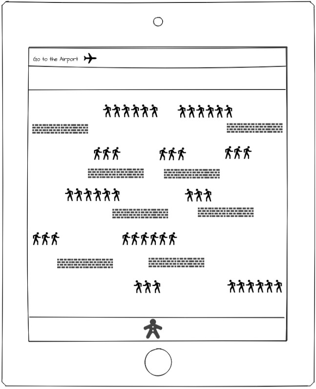
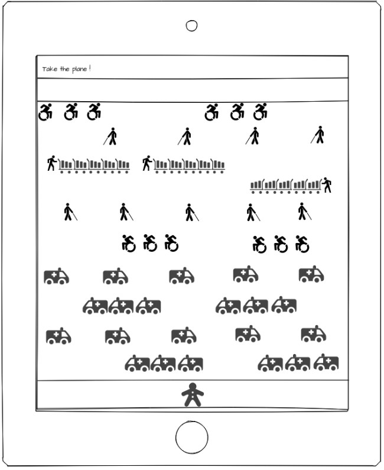
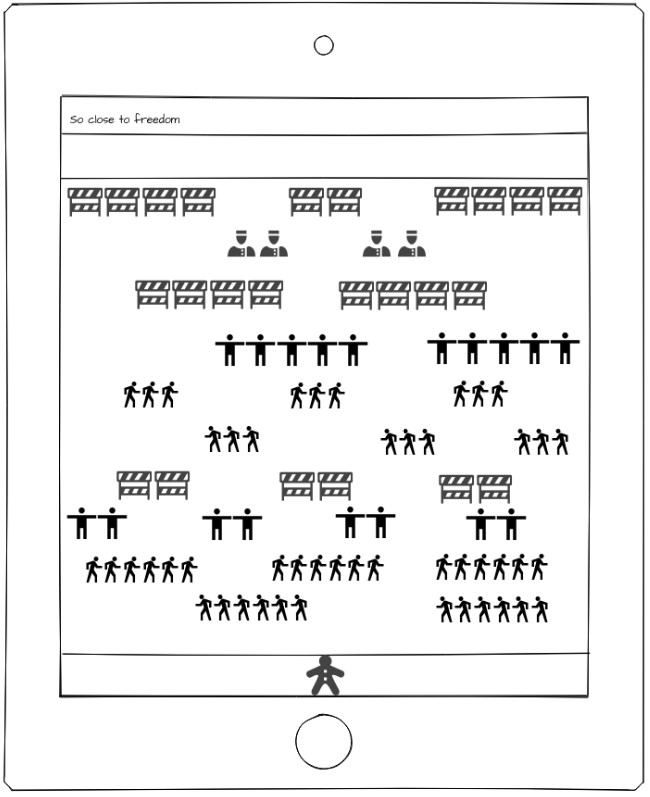

GET HOME NOW ! est un jeu de type "Frogger". Vous incarnez un personnage devant aller d'un point A à un point B de l'écran en évitant des obstacles fixes et des personnages ou véhicules se déplaçant à différentes vitesses de gauche à droite. Chaque fois que le personnage entre en contact avec l'un des éléments, il perd une vie et doit recommencer le niveau en cours. Vous disposez de trois vies pour effectuer les trois niveaux du jeu.
Le jeu se joue en utilisant les touches directionnelles pour se déplacer. Lors de chaque niveau, le joueur peut récupérer des objets lui donnant une vie supplémentaire ou un bonus.
Les différents niveaux
Level 1

Lors du premier niveau, vous vous trouvez dans une localité touristique en Asie et vous devez rejoindre l'aéroport. Les rues sont pleines d'infectés que vous devrez éviter pour arriver sans danger à votre objectif.
Level 2

Lors du niveau 2, les choses se gâtent pour vous. Vous êtes désormais à l'aéroport. Ce dernier est submergé par les services sanitaires et les infectés. Vous ferez face à des ambulances roulant à tombeau ouvert, à des handicapés très pressés, à des aveugles cherchant de l'aide ainsi qu'à des bagagistes survoltés.
Level 3

Lors du niveau 3, vous êtes désormais au pays, mais rien n'est encore gagné. Nombreux sont ceux qui essayent de rentrer et les services sanitaires ainsi que les services de sécurité veillent à ce que personne ne passe entre les mailles du filet.